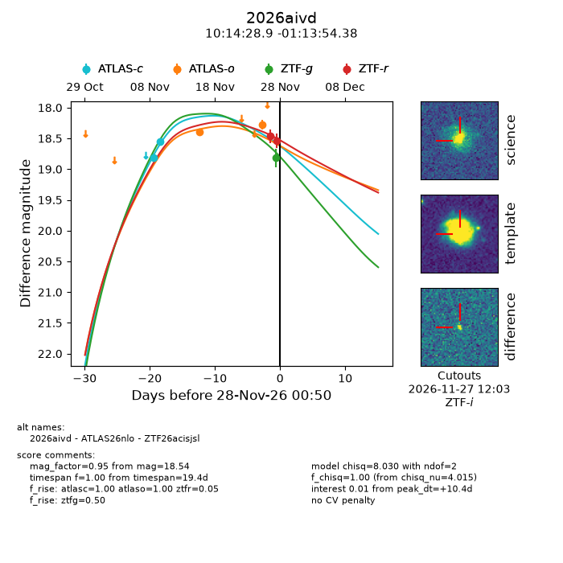
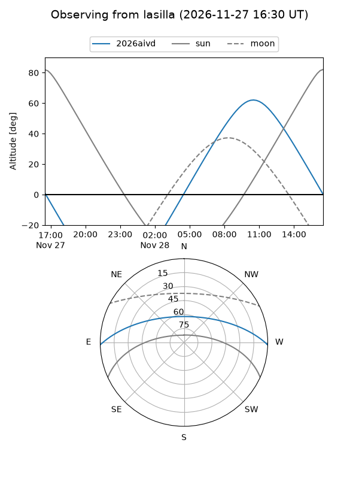
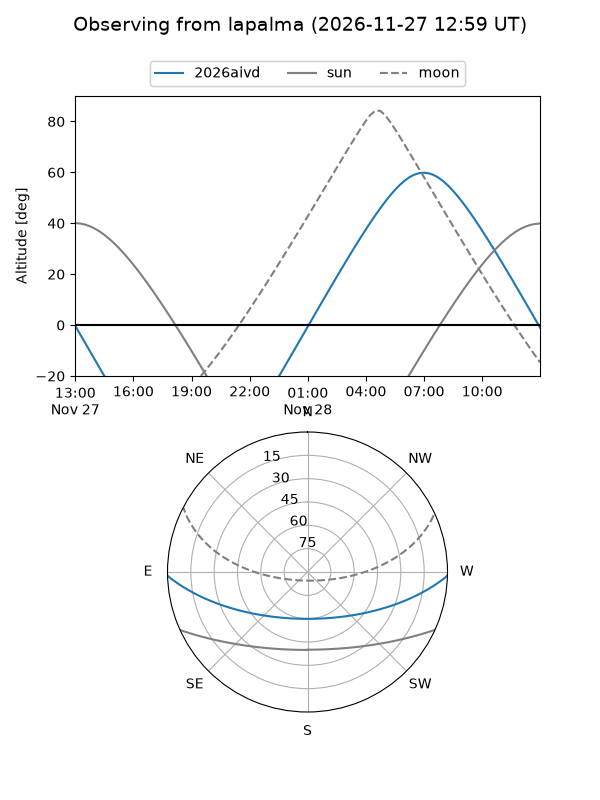
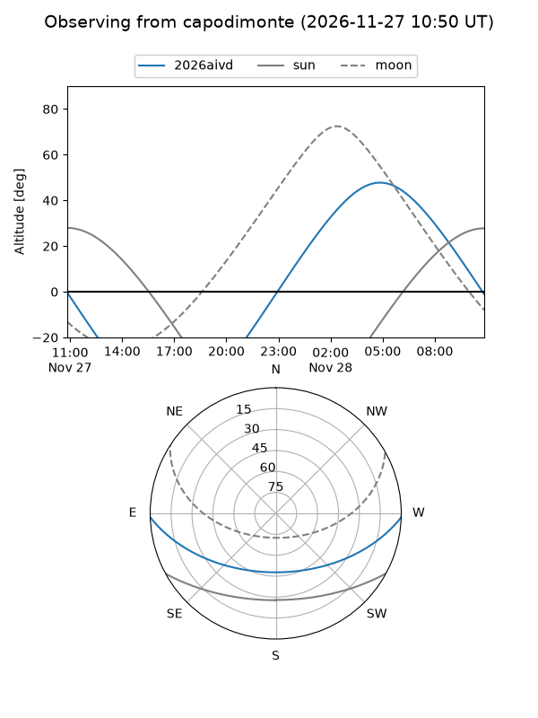
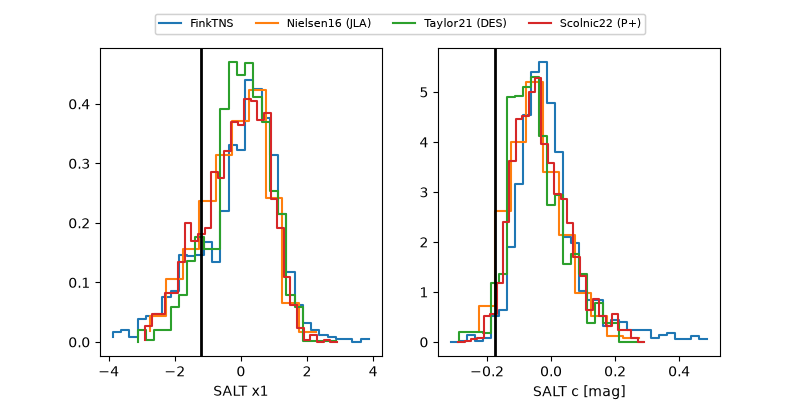

2026aivd
Target 2026aivd at 2026-11-28 00:51
Aliases and brokers:
FINK-ZTF: ztf.fink-portal.org/ZTF26acisjsl
Lasair-ZTF: lasair-ztf.lsst.ac.uk/objects/ZTF26acisjsl
ALeRCE-ZTF: alerce.online/object/ZTF26acisjsl
YSE-PZ: ziggy.ucolick.org/yse/transient_detail/2026aivd
TNS name: wis-tns.org/object/2026aivd
Direct TNS query: direct search
alt names
ZTF26acisjsl (ztf,fink_ztf)
2026aivd (tns,yse)
ATLAS26nlo (atlas)
Coordinates:
equatorial (ra, dec) = 153.6206,-1.23177
equatorial (HMS+DMS) = 10:14:28.94,-01:13:54.38
galactic (l, b) = (243.4117,+42.79272)
Flags:
peak dt: +10.4
Photometry:
last atlasc=18.55, atlaso=18.28, ztfg=18.82, ztfr=18.54
2 atlasc, 2 atlaso, 1 ztfg, 2 ztfr detections
Lightcurve

Visibility



Additional plots
